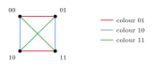
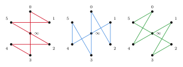
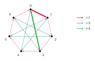
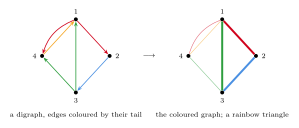
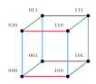
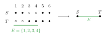

4 Rainbow paths and cycles
For matchings and spanning trees, the main questions in properly coloured complete graphs were about decompositions. For paths and cycles, even the existence of one long rainbow path is hard, because an algebraic obstruction appears already for Hamilton paths. This section starts with long rainbow paths in complete graphs and their connection to orderings of groups, and then turns to short rainbow cycles, to the number of edges that forces a rainbow cycle, and to rainbow Hamilton cycles in dense graphs.
4.1 Long rainbow paths in properly coloured complete graphs
Hahn's question and the Maamoun–Meyniel colouring
A properly coloured $K_n$ uses at least $n-1$ colours, which is exactly the number of edges of a Hamilton path. Hahn asked whether a Hamilton path can always be made rainbow. His conjecture was in fact more general: if $n=2k\geq 6$ and the edges of $K_n$ are coloured so that each colour is used at most $k$ times, then there should be a rainbow Hamilton path. Maamoun and Meyniel [210] showed in 1984 that this fails whenever $n$ is a power of $2$, already for proper colourings. Identify the vertices of $K_{2^k}$ with $\mathbb{Z}_2^k$ and give the edge $xy$ the colour $x+y$. This is an optimal colouring, and its colours are the $2^k-1$ non-zero elements of $\mathbb{Z}_2^k$. If $v_1,v_2,\dots,v_{2^k}$ were a rainbow Hamilton path, its edges would use every non-zero element once, so \[ v_1+v_{2^k} \;=\; \sum_{i=1}^{2^k-1}(v_i+v_{i+1}) \;=\; \sum_{x\in\mathbb{Z}_2^k\setminus\{0\}} x \;=\; 0 \] for $k\geq 2$, and so $v_1=v_{2^k}$, which is impossible (Figure 14). This is the same zero-sum argument that rules out transversals in the addition table of $\mathbb{Z}_{2m}$ (Section 2.3).

Andersen's conjecture
After this counterexample, the natural question is how close to Hamilton a rainbow path can be. Andersen [36] proved in 1989 that every properly coloured $K_n$ has a Hamilton cycle with at least $n-\sqrt{2n}$ distinct colours, and conjectured that one vertex less than a Hamilton path is always possible.
Every properly coloured $K_n$ contains a rainbow path with $n-1$ vertices.
By the Maamoun–Meyniel colouring this would be best possible. Progress came in two directions: long rainbow paths and cycles, and Hamilton cycles with many colours. Gyárfás and Mhalla found rainbow paths on $(2n+1)/3$ vertices, Gebauer and Mousset [131] and Chen and Li [84] on $(3/4-o(1))n$ vertices, and Alon, Pokrovskiy and Sudakov [28] found a rainbow cycle on $n-O(n^{3/4})$ vertices. This was the first asymptotic version of Conjecture 4.1. Their main tool was the observation that the edges of a random set of colours in a properly coloured $K_n$ behave much like a random graph. Balogh and Molla [44] improved the error to $O(\sqrt n\log n)$, and also found a Hamilton cycle with $n-O(\log^2 n)$ colours, improving Andersen's original bound. For random colourings, Gould, Kelly, Kühn and Osthus [143] showed that almost every optimal colouring of $K_n$ has a rainbow Hamilton path and a rainbow cycle using all the colours. Recently, the conjecture was proved for all large $n$.
For every sufficiently large $n$, every properly coloured $K_n$ contains a rainbow path with $n-1$ vertices.
The same paper proves a directed version, which settles a conjecture of Gyárfás and Sárközy on Latin squares for large $n$ (Section 6.1). It also gives a rainbow Hamilton path whenever the colouring uses at least $n$ colours, so Hahn's conjecture holds for large odd $n$, and a Hamilton cycle with at least $n-2$ colours, as Akbari, Etesami, Mahini and Mahmoody [17] had conjectured.
For cycles the picture is less complete. Bowtell, Montgomery, Müyesser and Pokrovskiy [63] find a rainbow cycle through all but a constant number $C$ of vertices, but they do not determine $C$. Akbari, Etesami, Mahini and Mahmoody asked for the exact value.
Does every $1$-factorisation of $K_n$ contain a rainbow cycle through all but two vertices?
The problem is the cycle analogue of Andersen's conjecture: removing an edge from such a cycle leaves a rainbow path on $n-2$ vertices, one fewer than Theorem 4.2 provides. Gould, Kelly, Kühn and Osthus [143] showed that almost all $1$-factorisations of $K_n$ have a rainbow Hamilton path, so colourings like that of Maamoun and Meyniel are rare. A different extension replaces the path by a tree: Montgomery, Pokrovskiy and Sudakov conjectured that every tree on $n-C$ vertices has a rainbow copy in every proper colouring of $K_n$, for some constant $C$ [239].
Globally bounded colourings
Hahn's conjecture also leads in a second direction, where the colouring need not be proper but each colour may be used only a few times. Here the question is how strong the global bound must be to guarantee a rainbow Hamilton cycle. Hahn and Thomassen proved that a bound of $O(n^{1/3})$ suffices, Albert, Frieze and Reed improved this to $n/64$, and Böttcher, Kohayakawa and Procacci to $n/38$ (see [239]). Hahn's original bound is not enough. Pokrovskiy and Sudakov [240] adapted their counterexample to Stein's conjecture (Section 2.9) to colourings of $K_n$ with fewer than $n/2$ edges of each colour in which every rainbow path misses at least $(\ln n)/42$ vertices.
So the threshold for a rainbow Hamilton cycle lies between $n/38$ and $n/2$, and two questions remain. The first is where it lies. The counterexamples need colour classes of size close to $n/2$, and Pokrovskiy [239] suggests that the threshold is asymptotically $n/2$: for every fixed $\varepsilon>0$, a globally $(1/2-\varepsilon)n$-bounded colouring of a large $K_n$ might always contain a rainbow Hamilton cycle. This would move the constant from $1/38$ to the largest value that the counterexamples allow. The second question is what remains true at the bound $n/2$ itself. Pokrovskiy suggests that a rainbow cycle of length $n-o(n)$ still exists. Its bipartite analogue has been answered: for equi-$n$-squares, partial transversals with $n-n^{1-\Omega(1)}$ cells always exist, and a deficit of order $\sqrt n$ can be forced (Theorem 2.29). For cycles in $K_n$ no such bound is known.
Schrijver's problem
Andersen's conjecture concerns complete graphs, but the same counting applies to every regular graph. A properly $d$-coloured $d$-regular graph has $d$ colours, so a rainbow path has at most $d$ edges. Schrijver asked whether one can always find a rainbow path with $d-1$ edges, and verified this for $d\leq 10$. For $d=n-1$ and $K_n$, this is Andersen's conjecture.
Every properly coloured $d$-regular graph contains a rainbow path with $(1-o(1))d$ edges.
Previously, the best general bound was about $2d/3$, and Babu, Chandran and Rajendraprasad had found rainbow paths with $d-o(d)$ edges in graphs without $4$-cycles. Theorem 4.4 works for host graphs that may be very sparse, where the random-subgraph method of Alon, Pokrovskiy and Sudakov is not available.
Regularity is essential to Theorem 4.4. If one only asks that every vertex sees many colours, much less is known. Here a natural target is again one less than the trivial bound.
Every edge-coloured graph in which every vertex is incident with edges of at least $d$ colours contains a rainbow path with $d-1$ edges.
Rainbow paths with $2d/3+1$ edges are known in general, and with $d-1$ edges for $d\leq 7$. For proper colourings of graphs with minimum degree $d$, Johnston, Palmer and Sarkar [165] found rainbow paths with $2d/3$ edges. Bucić, Frederickson, Müyesser, Pokrovskiy and Yepremyan [71] point out that even $d-o(d)$ edges, in either setting, would be new; their methods need the host to be close to regular.
The main motivation for Theorem 4.4 was a problem about groups, which we now describe.
4.2 Sequencings and Graham's rearrangement conjecture
Round dances and carry-over effects
In his Récréations mathématiques, Lucas described the following problem, crediting its solution to Walecki. Children dance in a ring, holding hands. How should the rounds be arranged so that every child holds hands with every other child exactly once? A round with $2n+1$ children is a Hamilton cycle on $2n+1$ vertices, so the question asks for a decomposition of $K_{2n+1}$ into $n$ Hamilton cycles. Walecki's solution places one child in the centre and rotates a zigzag path through the others (Figure 15).

A related problem arose in the design of experiments. Williams [268] considered experiments in which each subject receives several treatments in succession, for example different diets given to cows in successive periods, where each treatment may leave a residual effect on the next one. To balance these effects, every ordered pair of distinct treatments should occur exactly once as consecutive treatments of some subject. A Latin square is row-complete if every ordered pair $(x,y)$ with $x\neq y$ appears exactly once in adjacent cells of a row. Reading each row as a directed path, a row-complete Latin square of order $n$ is the same as a decomposition of the complete directed graph on $n$ vertices into $n$ Hamilton paths.
Gordon's question
Gordon [141] found row-complete Latin squares from groups. A sequencing of a group $G$ of order $n$ is an ordering $b_1,\dots,b_n$ of its elements such that the partial products $a_i=b_1b_2\cdots b_i$ are all distinct. Gordon showed that then the square with entries $a_i^{-1}a_j$ is row-complete and column-complete, and asked which groups have a sequencing. For abelian groups he showed that this happens exactly when the group has a unique element of order $2$. For non-abelian groups the question is open in general. Keedwell conjectured that the dihedral groups of orders $6$ and $8$ and the quaternion group are the only non-abelian groups without a sequencing, and this has been verified for all orders up to $255$ by computer [228].
Ringel considered a variant in his solution of the Heawood map colouring problem. An R-sequencing is an ordering of the elements with $b_1\cdots b_n$ equal to the identity and the first $n-1$ partial products distinct. An R-sequencing gives a complete mapping, and Friedlander, Gordon and Miller conjectured that an abelian group has an R-sequencing exactly when it satisfies the Hall–Paige condition of Section 2.4. This was proved by Alspach, Kreher and Pastine [228].
Graham's conjecture
Graham [144] asked the same question for subsets of cyclic groups of prime order, in a 1971 paper on sums of integers taken from a fixed sequence. Later papers of Graham suggest that the problem was also motivated by juggling patterns [71].
Let $p$ be a prime and $S\subseteq\mathbb{Z}_p\setminus\{0\}$. Then the elements of $S$ can be ordered as $s_1,\dots,s_k$ so that the partial sums $s_1,\,s_1+s_2,\,\dots,\,s_1+\dots+s_k$ are distinct.
The same question was raised independently in design theory. Archdeacon introduced Heffter arrays to construct cycle decompositions and surface embeddings, and Archdeacon, Dinitz, Mattern and Stinson proposed a version of Conjecture 4.6 for all cyclic groups. Alspach, studying cycle decompositions of complete graphs, conjectured that if the elements of $S$ do not sum to $0$, then the partial sums can be made distinct and non-zero [71].
The translation into rainbow paths is as follows. For a group $G$ and $S\subseteq G\setminus\{e\}$, the Cayley digraph has an edge from $g$ to $gs$ for each $g\in G$ and $s\in S$. Colour this edge with $s$. The colouring is proper in the directed sense: each vertex has one outgoing and one incoming edge of each colour. If $s_1,\dots,s_k$ is an ordering with distinct partial products, then the partial products $s_1,\,s_1s_2,\,\dots,\,s_1\cdots s_k$ form a directed path whose edges have the distinct colours $s_2,\dots,s_k$. Conversely, a rainbow directed path with $k-1$ edges misses exactly one colour $c\in S$, and translating it to start at $c$ gives an ordering with distinct partial products. So Graham's question asks for a rainbow directed path using all but one colour in the Cayley digraph of $\mathbb{Z}_p$ (Figure 16).

Progress on Conjecture 4.6 came separately for small and for large sets. For small sets, the polynomial method gives $|S|\leq 12$, and rectification arguments of Sawin and of Kravitz [184] give $|S|\leq\log p/\log\log p$. Bedert and Kravitz [48] went beyond this barrier, to $|S|\leq e^{c(\log p)^{1/4}}$. For large sets, the random Hall–Paige theorem of Müyesser and Pokrovskiy [224] gives the conjecture when $|S|\geq(1-o(1))p$. The rainbow-path translation brought progress for arbitrary groups. Bucić, Frederickson, Müyesser, Pokrovskiy and Yepremyan [71] showed that every subset of every group has an ordering in which all but $o(|S|)$ partial products are distinct, using a directed version of Theorem 4.4. Bedert, Bucić, Kravitz, Montgomery and Müyesser [47] showed that every subset of size at least $|G|^{1-c}$ of any group $G$ has an ordering with distinct partial products, and that the same holds in $\mathbb{F}_2^n$ for all subsets of size at least a constant. The remaining middle range was covered by Pham and Sauermann.
Graham's rearrangement conjecture holds for all sufficiently large primes $p$.
Pham and Sauermann proved the conjecture for $C_\alpha\leq|S|\leq p^{1-\alpha}$, and together with the results for small and large sets this covers every $S$ when $p$ is large. The thresholds are not explicit, so the conjecture is still open for small primes.
Beyond cyclic groups of prime order, Alspach and Liversidge conjectured that every subset of every finite abelian group, not containing $0$, has an ordering with distinct partial sums. For cyclic groups, Costa, Della Fiore and coauthors [98] proved this for several families of composite orders. Very recently, Kuang and Wang settled the conjecture for all large sets.
There is an absolute constant $n_0$ such that, for every finite abelian group $G$, every set $S\subseteq G\setminus\{0\}$ with $|S|\geq n_0$ has an ordering with distinct partial sums.
The key new ingredient is additive dimension: if $S$ contains a dissociated subset of size of order $(\log|S|)^2/\log\log|S|$, then $S$ has an ordering in which no proper interval of consecutive terms sums to $0$. This is within a factor $O(\log|S|/\log\log|S|)$ of the smallest additive dimension that a set of this size can have. So for abelian groups, only sets of bounded size remain.
The directed Schrijver problem
For non-abelian groups the question is open, and the rainbow-path language suggests a purely graph-theoretic version. In the Cayley digraph of $G$ with respect to $S$, every vertex has exactly one outgoing and one incoming edge of each of the $|S|$ colours. So it is a $d$-regular digraph with $d=|S|$, properly coloured with $d$ colours, and an ordering of $S$ with distinct partial products is a rainbow directed path with $d-1$ edges. Bucić, Frederickson, Müyesser, Pokrovskiy and Yepremyan asked whether such a path exists in every digraph of this kind, not only in Cayley digraphs.
Let $D$ be a $d$-regular digraph, in which every vertex has indegree and outdegree $d$, whose edges are coloured with $d$ colours so that each vertex has one incoming and one outgoing edge of each colour. Does $D$ contain a rainbow directed path with $d-1$ edges?
A positive answer would show that every subset not containing the identity of every finite group, abelian or not, has an ordering with distinct partial products. That would contain Graham's conjecture, Theorem 4.8 and the corresponding questions for non-abelian groups. It would also contain the undirected Schrijver problem, since replacing each edge of a properly coloured $d$-regular graph by two opposite directed edges of the same colour gives a digraph as in Problem 4.9. For complete symmetric digraphs, an asymptotic answer follows from work of Benzing, Pokrovskiy and Sudakov [51], and Bucić, Frederickson, Müyesser, Pokrovskiy and Yepremyan answered it asymptotically when $d$ is linear in the number of vertices. Wilson removed the density condition.
Every $d$-regular digraph, properly coloured with $d$ colours as in Problem 4.9, contains a rainbow directed path with $d-o(d)$ edges.
Applied to Cayley digraphs, Theorem 4.10 shows that every subset $S$ of every group, not containing the identity, contains a subset of size $|S|-o(|S|)$ which has an ordering with distinct partial products. The exact form of Problem 4.9 is open, as is the undirected Schrijver problem.
Two directions remain open beyond the exact problem. The first is algebraic. For abelian groups, Theorem 4.8 leaves only sets of bounded size. For non-abelian groups, valid orderings are known for sets of size at least $|G|^{1-c}$ in every finite group [47], and for small sets in dihedral and related semidirect products [97]. In the dihedral group of order $2p$, Costa, Della Fiore, Feng and Liu point out that only an intermediate range of set sizes is missing [98].
Does every subset of every finite group, not containing the identity, have an ordering with distinct partial products?
Bedert, Bucić, Kravitz, Montgomery and Müyesser consider an affirmative answer feasible. Problem 4.9 would give it.
The second direction is to weaken regularity in Theorem 4.10. Bucić et al. [71] asked whether every properly coloured digraph with minimum outdegree $d$ contains a rainbow path with $d-o(d)$ edges. A simple greedy argument gives $d/2$, and for general digraphs nothing better is known. Wilson's proof works when every vertex has outdegree at least $d$ and indegree $O(d)$, and he gives an example showing that removing the bound on the indegrees requires new ideas [269]. For Eulerian digraphs, where in- and outdegrees agree, Bucić et al. also ask for the longest rainbow path in terms of the average outdegree.
4.3 Short rainbow cycles
So far we have looked for long rainbow paths. The opposite question asks for a short rainbow cycle. Its motivation comes from directed graphs. Behzad, Chartrand and Wall conjectured in 1970 that a regular digraph with outdegree $r$ has a directed cycle of length at most $\lceil n/r\rceil$, and Caccetta and Häggkvist extended this to all digraphs.
Every digraph on $n$ vertices with minimum outdegree at least $r$ contains a directed cycle of length at most $\lceil n/r\rceil$.
Conjecture 4.12 is one of the best-known problems on digraphs, and it is open even for $r=n/3$, that is, for directed triangles. Shen proved that a cycle of length at most $\lceil n/r\rceil+73$ exists. Aharoni proposed a rainbow generalisation.
Let $G$ be a simple graph on $n$ vertices whose edges are coloured with $n$ colours, each used at least $r$ times. Then $G$ contains a rainbow cycle of length at most $\lceil n/r\rceil$.
To see that Conjecture 4.13 implies Conjecture 4.12, take a digraph $D$ with minimum outdegree $r$. Replace each edge from $u$ to $v$ by an undirected edge $uv$ of colour $u$ (Figure 17). Every vertex gives a colour class of size at least $r$. In a rainbow cycle, each vertex $u$ is the tail of at most one of its edges, and since there are as many vertices as edges on the cycle, every vertex is the tail of exactly one. So the edges are oriented consistently around the cycle, which is therefore a directed cycle of $D$.

The case $r=1$ of Conjecture 4.13 is easy. DeVos, Drescher, Funk, González Hermosillo de la Maza, Guo, Huynh, Mohar and Montejano [107] proved the case $r=2$, and Aharoni, DeVos and Holzman [8] studied the case of rainbow triangles. Hompe and Huynh [154] proved that for every fixed $r$ the conjecture holds up to an additive constant $\alpha_r=O(r^5\log^2 r)$, in analogy with Shen's theorem. Clinch, Goerner, Huynh and Illingworth [91] survey the conjecture and its variants. If many colour classes are not stars, rainbow cycles become much shorter: Guo [148] showed, extending earlier work of Aharoni, Berger, Chudnovsky, Guo and Zerbib, that a small fraction of non-star colour classes already forces a rainbow cycle of length $O(\log n)$. In the reduction from digraphs every colour class is a star, so these results do not apply to the Caccetta–Häggkvist conjecture.
The smallest open case is $r=3$. The Caccetta–Häggkvist conjecture is known for $r=3$, and also for $r=4$ and $r=5$, but Aharoni's conjecture is not. For $r=3$, the theorem of Hompe and Huynh gives a rainbow cycle of length at most $n/3+\alpha_3$, improving the earlier bound $4n/9+7$ [91]; what is missing is the additive constant. DeVos et al. [107] proposed proving Conjecture 4.13 for $r\in\{3,4,5\}$ as a concrete target, where the uncoloured statement is already available.
The conjecture can also be stated for matroids. A graph on $n$ vertices has a graphic matroid of rank $n-1$, and cycles are its circuits. DeVos et al. conjectured that the case $r=2$ holds for all regular matroids. Thus, if the elements of a simple regular matroid of rank $n-1$ are coloured with $n$ colours, each used at least twice, there should be a rainbow circuit of size at most $\lceil n/2\rceil$. McGuinness [213] proved this in 2026. The same statement fails for binary matroids [91]. Whether regular matroids also satisfy the analogue of Conjecture 4.13 for every $r$ is the natural next question; it would contain Aharoni's conjecture.
4.4 How many edges force a rainbow cycle?
A graph with $n$ vertices and $n$ edges has a cycle. In 2007, Keevash, Mubayi, Sudakov and Verstraëte [173] asked how many edges a properly coloured graph on $n$ vertices must have to contain a rainbow cycle. The hypercube shows that a linear number is not enough. Colour each edge of $Q_k$ by the coordinate in which its endpoints differ. Around any cycle, each coordinate changes an even number of times, so every colour appears an even number of times and no cycle is rainbow (Figure 18). Since $Q_k$ has $n=2^k$ vertices and average degree $k=\log_2 n$, the answer is at least of order $n\log n$.

The problem became important because of a connection to coding theory, which we now describe in more detail; see Sudakov's survey [254] for a fuller account.
Even covers and sparse linear equations
An even cover in a hypergraph is a non-empty set of edges that covers every vertex an even number of times. In a graph, a smallest even cover is a shortest cycle. For hypergraphs, the size of a smallest even cover therefore plays the role of the girth. Give each vertex $v$ a variable $x_v$ over $\mathbb{F}_2$, and give each edge $E$ the equation $\sum_{v\in E}x_v=b_E$. The edges in an even cover correspond exactly to a non-empty collection of equations whose left-hand sides sum to zero. Thus a short even cover is a short linear dependency among the rows of the incidence matrix.
Sparse linear equations also define low-density parity-check codes, where each equation checks a small number of codeword positions. In a $k$-XOR instance, an even cover certifies inconsistency when the corresponding right-hand sides sum to $1$. Feige's 2008 conjecture on short even covers was motivated by certificates of unsatisfiability for random $3$-SAT formulas; the connection to SAT requires further conditions. The conjecture asks how many edges force a small even cover in a uniform hypergraph. Guruswami, Kothari and Manohar proved it up to logarithmic factors; Hsieh, Kothari and Mohanty then improved these factors. Hsieh, Kothari, Mohanty, Munhá Correia and Sudakov [157] gave a combinatorial proof and further improvements for odd uniformity.
The translation uses a properly coloured auxiliary graph. Let $H$ be a $k$-uniform hypergraph with $k$ even, and let $\ell\geq k/2$. The Kikuchi graph has as vertices the $\ell$-element subsets of $V(H)$. Join $S$ and $T$ by an edge of colour $E\in E(H)$ when their symmetric difference is $E$ (Figure 19). This is a proper colouring: for each $S$ and $E$ there is at most one possible neighbour $T=S\triangle E$. A cycle in this graph has a useful interpretation in $H$. The hyperedges whose colours occur an odd number of times form an even cover, provided this collection is non-empty. In particular, every rainbow cycle gives an even cover of the same size. A cycle with a colour occurring exactly once also gives an even cover of at most its length.

Locally decodable codes
A binary code $C:\{0,1\}^m\to\{0,1\}^n$ is $q$-query locally decodable if a randomised decoder can recover any chosen message bit by reading at most $q$ codeword positions. The recovery probability must exceed $1/2$ by a fixed positive constant, even after a fixed positive fraction of the positions have been corrupted. Such codes arise in private information retrieval, where a user wants to retrieve a bit of a database without revealing which bit is requested. The basic question is how small the codeword length $n$ can be in terms of $m$. For $q=2$, the Hadamard code has $n=2^m$, and exponential length is necessary. For $q=3$, the known constructions have subexponential length, while the lower bounds are polynomial.
The connection to Kikuchi graphs led to an improvement over the earlier quadratic lower bounds.
For fixed positive error tolerance and decoding advantage, every binary $3$-query locally decodable code with $m$ message bits has length $n=\widetilde{\Omega}(m^3)$.
Here $\widetilde{\Omega}$ suppresses factors polynomial in $\log m$. The theorem applies to nonlinear codes as well. Hsieh, Kothari, Mohanty, Munhá Correia and Sudakov [157] obtained a combinatorial proof of the near-cubic bound for binary linear codes using coloured Kikuchi graphs.
A locally correctable code allows recovery of any codeword bit, rather than only a message bit. For binary linear codes this stronger requirement gives a much larger lower bound on the length. Alrabiah and Guruswami [32] proved that a binary linear $3$-query locally correctable code of length $n$ has dimension $O(\log^2 n\cdot\log\log n)$, for fixed positive error tolerance. Quadratic Reed–Muller codes have dimension of order $\log^2 n$, so this is nearly tight. Their argument uses rainbow cycles in properly coloured graphs that encode linear dependencies of the code.
Rainbow cycles
For rainbow cycles themselves, after several earlier bounds, Tomon proved that average degree $(\log n)^{2+o(1)}$ suffices, and Janzer and Sudakov and, independently, Kim, Lee, Liu and Tran improved this to $O(\log^2 n)$. The following theorem is tight up to the $o(1)$ term, by the hypercube.
Every properly coloured graph on $n$ vertices with average degree at least $(\log n)^{1+o(1)}$ contains a rainbow cycle.
Alon, Bucić, Sauermann, Zakharov and Zamir also observed a connection between this problem and questions in additive number theory, which allowed them to extend results on those questions from abelian to non-abelian groups. For the coding applications, what is needed is a short cycle in which at least one colour appears exactly once. This is weaker than being rainbow, and Sudakov's survey [254] gives a short proof of the bound on the number of edges that forces it.
The hypercube shows that average degree $\log_2 n$ is not enough, and Keevash, Mubayi, Sudakov and Verstraëte conjectured that this is the truth up to a constant factor.
There is a constant $C$ such that every properly coloured graph on $n$ vertices with at least $Cn\log n$ edges contains a rainbow cycle.
The theorem of Alon, Bucić, Sauermann, Zakharov and Zamir gives average degree $C\log n\log\log n$, so only the factor $\log\log n$ is missing. They explain why their argument stops there. It splits the colours at random into two halves and looks for rainbow walks in each half from a common vertex. There are properly coloured expanders, built from Hamming graphs, with average degree $\log n(\log\log n)^{1-o(1)}$ in which a random half of the colours leaves only small components. As a first step towards Conjecture 4.16, they ask whether the colours of every properly coloured robust sublinear expander with average degree $C\log n$ can be split into two classes so that both resulting subgraphs are spanning and connected [24].
On the coding side, the combinatorial proofs leave two gaps. Feige's conjecture asks for an even cover of size $O(\ell\log n)$ in every $k$-uniform hypergraph on $n$ vertices with $Cn(n/\ell)^{k/2-1}$ edges, and the known results still lose logarithmic factors [157]. For $3$-query locally decodable codes, the lower bound of Theorem 4.14 is nearly cubic, while the shortest known codes have subexponential length. Hsieh, Kothari, Mohanty, Munhá Correia and Sudakov call a super-cubic lower bound an outstanding open question. For linear locally correctable codes the lower bound of Alrabiah and Guruswami is already exponential, but their proof uses the extra structure that local correction provides.
4.5 Colour-degree conditions
In an arbitrary edge-coloured graph, the analogue of minimum degree is the minimum colour degree $\delta^c(G)$, the least number of colours at a vertex. Li [193], and independently Li, Ning, Xu and Zhang [192], proved a rainbow version of Mantel's theorem: every edge-coloured graph on $n$ vertices with $\delta^c(G)\geq (n+1)/2$ contains a rainbow triangle. This is tight: a properly coloured complete bipartite graph with parts of size $n/2$ has colour degree $n/2$ and no triangle at all. Ning and Tian [226] recently determined the minimum number of rainbow triangles under this condition, answering a question of Li, Ning, Shi and Zhang. Colour-degree conditions for many vertex-disjoint rainbow triangles are discussed in Section 5.6. Without triangles, longer rainbow cycles appear under weaker conditions. Czygrinow and Parvatikar [103] showed that every edge-coloured triangle-free graph on $n$ vertices with $\delta^c(G)\geq(n+7)/5$ contains a rainbow $4$-cycle, which is best possible. Rainbow cycles of other fixed lengths, and their relation to cycles in oriented graphs, are discussed in Section 6.2.
4.6 Rainbow Hamilton cycles in dense graphs
Dirac's theorem says that every graph on $n\geq 3$ vertices with minimum degree at least $n/2$ has a Hamilton cycle. In a proper colouring, a rainbow Hamilton cycle needs $n$ colours, and the examples of Section 4.1 show that a global bound on the colour classes is needed even in $K_n$. Coulson and Perarnau proved a rainbow Dirac theorem under such a bound.
There is $\mu>0$ such that, for large $n$, every graph on $n$ vertices with minimum degree at least $n/2$ contains a rainbow Hamilton cycle in every colouring in which each colour is used at most $\mu n$ times.
They also showed that the statement fails for $\mu>1/8$, and the optimal constant is not known. For near-rainbow Hamilton cycles the threshold $1/8$ is exact. Peng and Yan [233] showed that every properly coloured graph with minimum degree $(1/2+\varepsilon)n$ in which each colour is used at most $n/8$ times has a Hamilton cycle with $n-o(n)$ colours, and that $1/8$ cannot be increased. Without a global bound, Cheng, Huang, Liu, Wang and Yan [85] showed that a properly coloured graph with $\delta(G)\geq cn$, for $1/2<c\leq 1$, has a Hamilton cycle with $cn-O(n^{1/2})$ colours, which is best possible up to the error term. For $c=1$ this recovers Andersen's bound. Ding, Hu and Jiang [109] found the exact degree condition for rainbow Hamilton cycles in strongly edge-coloured graphs, in which every colour class is an induced matching: minimum degree $(n+1)/2$ suffices for large $n$.
The constant $1/8$ appears twice above: it is the limit of Theorem 4.17 for arbitrary colourings, and the exact threshold for near-rainbow Hamilton cycles in proper colourings. Peng and Yan conjectured that for proper colourings it is also the exact threshold for rainbow Hamilton cycles.
Every proper colouring of a graph on $n$ vertices with minimum degree at least $n/2$, in which each colour is used at most $n/8$ times, contains a rainbow Hamilton cycle.
In Theorem 4.17 the constant $\mu$ is far below $1/8$, so the conjecture asks for the sharp constant, and for proper colourings only. Without a global bound, Cheng, Huang, Liu, Wang and Yan [85] believe that their bound $cn-O(n^{1/2})$ on the number of colours already holds at $c=1/2$, that is, for Dirac graphs themselves, as Peng and Yan had also conjectured. Their theorem gives one colourful Hamilton cycle. Graphs with minimum degree $(1/2+\varepsilon)n$ contain $n/8$ edge-disjoint Hamilton cycles. Motivated by this, they conjecture that for $c>1/2$ every proper colouring contains at least $n/8$ Hamilton cycles, each using $cn-o(n)$ colours. They also propose a colourful version of the Komlós–Sárközy–Szemerédi theorem for bounded-degree spanning trees.
Rainbow versions of classical partition and decomposition problems have also been studied. Lehel conjectured that the vertices of every $2$-edge-coloured complete graph can be partitioned into two monochromatic cycles, and Bessy and Thomassé proved this in 2010. Araújo, Liu, Martins, Mendonça, Moreira, Santos and Yan [37] proved a rainbow analogue: for large $n$, the vertices of every properly coloured $K_n$ can be partitioned into two rainbow cycles. Liu, Xu and Yang [198] determined asymptotically how many rainbow paths are needed to cover the edges of a properly coloured dense graph. In the other direction, one may prescribe a few edges and ask for a Hamilton decomposition that separates them. Wu conjectured in 1999 that for every subgraph $H$ of $K_{2n+1}$ with $n$ edges, the complete graph $K_{2n+1}$ has a decomposition into Hamilton cycles in which the edges of $H$ lie in different cycles. If the edges of $H$ are given different colours and the edges of $K_{2n+1}$ outside $H$ are uncoloured, the cycles must each receive at most one colour. Javadi and Miralaei [163] proved Wu's conjecture. They conjecture more generally that if the edges of $H$ are coloured so that each colour class is a linear forest, then the colouring extends to all of $K_{2n+1}$ with $n$ colours, each forming a Hamilton cycle.
The rainbow version of Lehel's conjecture also leaves two questions. The two rainbow cycles may share colours, and this cannot always be avoided; Araújo et al. [37] ask how few colours they need to share. They also suggest partitions into rainbow powers of cycles. The $r$-th power of a cycle has $r$ edges per vertex, and $K_n$ can be properly coloured with $n$ colours, so a rainbow $r$-th power of a cycle has at most about $n/r$ vertices. A bounded number of vertex-disjoint rainbow $r$-th powers of cycles might still cover $K_n$. As a first step they ask for one such power on $n/r-o(n)$ vertices in every properly coloured $K_n$.
Rainbow Hamilton cycles in graph collections, where each edge must come from a different graph of a family, and in randomly coloured random graphs are discussed in Sections 5.5 and 5.8.